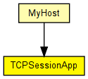
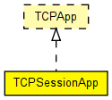

Single-connection TCP application: it opens a connection, sends the given number of bytes, and closes. Sending may be one-off, or may be controlled by a "script" which is a series of (time, number of bytes) pairs. May act either as client or as server, and works with TCPVirtualBytesSendQueue/RcvQueue as sendQueue/receiveQueue setting for TCP. Compatible with both IPv4 and IPv6.
Opening the connection
Regarding the type of opening the connection, the application may be either a client or a server. When active=false, the application will listen on the given local port, and wait for an incoming connection. When active=true, the application will bind to given local address:port, and connect to the connectAddress:connectPort. To use an ephemeral port as local port, set the port parameter to -1.
Even when in server mode (active=false), the application will only serve one incoming connection. Further connect attempts will be refused by TCP (it will send RST) for lack of LISTENing connections.
The time of opening the connection is in the tOpen parameter.
Sending data
Regardless of the type of OPEN, the application can be made to send data. One way of specifying sending is via the tSend, sendBytes parameters, the other way is sendScript. With the former, sendBytes bytes will be sent at tSend. With sendScript, the format is "<time> <numBytes>;<time> <numBytes>;..."
Closing the connection
The application will issue a TCP CLOSE at time tClose. If tClose=-1, no CLOSE will be issued.

The following diagram shows usage relationships between types. Unresolved types are missing from the diagram. Click here to see the full picture.
The following diagram shows inheritance relationships for this type. Unresolved types are missing from the diagram. Click here to see the full picture.
If a module type shows up more than once, that means it has been defined in more than one NED file.
| MyHost (compound module) | (no description) |
| Name | Type | Default value | Description |
|---|---|---|---|
| address | string | "" | |
| port | int |
FIXME change to listenPort = default(1000) |
|
| active | bool | true | |
| connectAddress | string | ||
| connectPort | int | 1000 | |
| tOpen | double | 1s | |
| tSend | double | 1s | |
| sendBytes | int | 1MB | |
| sendScript | string | "" | |
| tClose | double | 2s |
| Name | Value | Description |
|---|---|---|
| display | i=block/app |
| Name | Direction | Size | Description |
|---|---|---|---|
| tcpIn | input | ||
| tcpOut | output |
// // Single-connection TCP application: it opens a connection, sends // the given number of bytes, and closes. Sending may be one-off, // or may be controlled by a "script" which is a series of // (time, number of bytes) pairs. May act either as client or as server, // and works with TCPVirtualBytesSendQueue/RcvQueue as sendQueue/receiveQueue // setting for TCP. // Compatible with both IPv4 and IPv6. // // <b>Opening the connection</b> // // Regarding the type of opening the connection, the application may // be either a client or a server. When active=false, the application // will listen on the given local port, and wait for an incoming connection. // When active=true, the application will bind to given local address:port, // and connect to the connectAddress:connectPort. To use an ephemeral port // as local port, set the port parameter to -1. // // Even when in server mode (active=false), the application will only // serve one incoming connection. Further connect attempts will be // refused by TCP (it will send RST) for lack of LISTENing connections. // // The time of opening the connection is in the tOpen parameter. // // <b>Sending data</b> // // Regardless of the type of OPEN, the application can be made to send // data. One way of specifying sending is via the tSend, sendBytes // parameters, the other way is sendScript. With the former, sendBytes // bytes will be sent at tSend. With sendScript, the format is // "<time> <numBytes>;<time> <numBytes>;..." // // <b>Closing the connection</b> // // The application will issue a \TCP CLOSE at time tClose. If tClose=-1, no // CLOSE will be issued. // simple TCPSessionApp like TCPApp { parameters: string address = default(""); int port; // FIXME change to listenPort = default(1000) bool active = default(true); string connectAddress; int connectPort = default(1000); double tOpen @unit("s") = default(1s); double tSend @unit("s") = default(1s); int sendBytes @unit("B") = default(1MB); string sendScript = default(""); double tClose @unit("s") = default(2s); @display("i=block/app"); gates: input tcpIn @labels(TCPCommand/up); output tcpOut @labels(TCPCommand/down); }